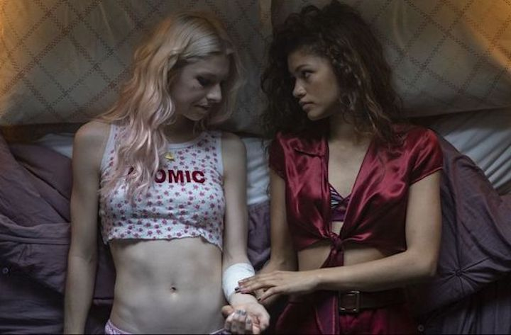
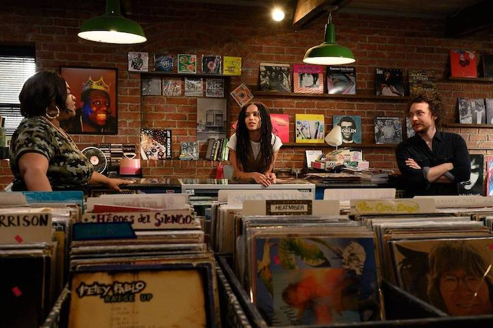
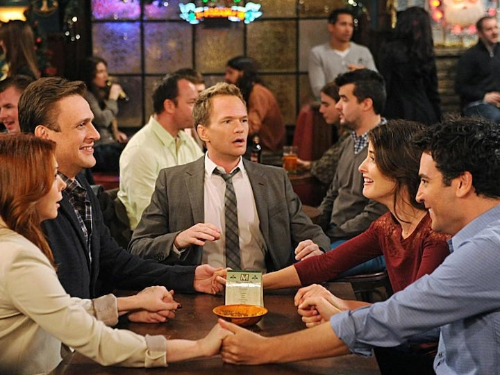
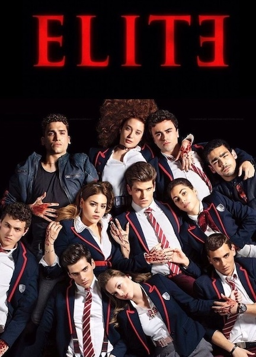

Euphoria: My Favorite Tv Show
By Julianna Mandarino, Oct 28, 2021
Euphoria follows the troubled life of 17-year-old Rue (narrator), a drug addict fresh from rehab with no plans to stay clean, and the people who circle her orbit. Setting aside the the beautiful aesthetics this show produces (The reason why many people love this show), the messages each chraracters' story adds to the show has resonated with me and my experiences. I relate back to the themes and plots deeply and having that within a show, especially in this generation, is very impactful. I also appreciate the fact that each episode is centeres around an individual character and their individual troubles. Getting all these different sides to characters really helps you feel and connect to each and every one of them.
Big Little Lies: A Show I Can't Live Without
By Julianna Mandarino, Oct 25, 2021

This darkly comedic series tells the tale of three mothers whose seemingly perfect lives unravel to the point of murder. This show has 6 of the strongest female leads that no show before this has ever possesed. Big Littles Lies is able to seemingly show the perfect suburbian lives and then use that find the cracks and flaws within each family and relationship within the show. The show's use of classism and white collar is perfect and couldn't be done better. This is a must watch show.
High Fidelity: Gone Too Soon
By Julianna Mandarino, Oct 23, 2021
Considering the fact that my favorite movie is High Fidelity, it only makes sense for me to be a die hard fan of the tv show as well. I believe this show bring a breath of fresh air into the story told through literature and film beforehand. Starring Zoe Kravitz, this story follows Rob, a record-store owner in the rapidly gentrified Crown Heights neighborhood of Brooklyn, as she revisits past relationships through music and pop culture while trying to get over her one true love. While this show was cancelled after one season (wrongfully), I think it shows how to take a story, and adapt it to fit the values of a growing society. While the movies features all white males, they change it to feature two stong black women leads and a member of the LGBTQ+ community, which I really appreciate. Not only does it adapt the characters, but it dives more into the supporting characters so we get to find out more about their lives and interests. Also, if you couldn't tell yet, I'm in love with Zoe Kravitz. This show was taken from us too soon.
How I Met Your Mother: A Show I've Seen A Million Times
By Julianna Mandarino, Oct 20, 2021
How I Met Your Mother is the ultimate comfort show. The show is about a father recounting to his children - through a series of flashbacks - the journey he and his four best friends took leading up to him meeting their mother. Following characters Ted, Marshall, Lily, Robin, and Barney, this sitcom is 9 season of witty comedy and fresh ideas. While I don't particularly love the lack of diversity within the characters, this show never fails to make me laugh, no matter how many times I've seen this show. I watch every single night when I'm doing homework, going to bed, etc., and when it's over, I start it right over. Every single episode is different from another, while still following a solid timeline which I love. I'd recommend it to anyone looking to settle in for the long haul.
Elite: My Guilty Pleasure Show
By Julianna Mandarino, Oct 17, 2021
When three working-class teens enroll in an exclusive private school in Spain, the clash between them and the wealthy students leads to murder. Elite is a Spanish murder mystery show that is jam packed with drama. You with having only 8 episodes a season, you never get bored. There is always something going on that keeps me hooked in. Although within each season it generally remains the same concept, I don't really mind because it is just out there enough to pull me back on each and every time. I love this show, Netflix did good with this one.